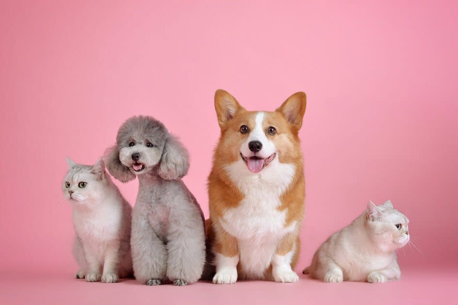
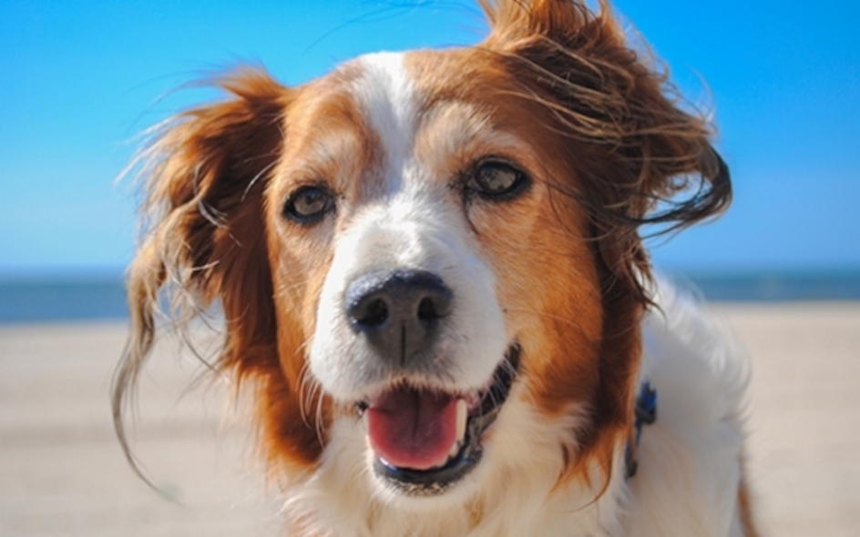

Uniformidade: A máquina proporciona um corte mais uniforme, resultando em um
visual mais limpo e bem-acabado.
Menos Emaranhados: Ideal para pelagens densas, a tosa máquina ajuda a reduzir a
formação de nós e emaranhados, facilitando a manutenção.
Menos Irritacao: A tosa maquina pode causar menos irritação na pele em
comparação com a tesoura, pricipalmente em pelagens densas ou emarahadas.
Agendar
Tosa Bebê
Comprimento dos Pelos: A tosa bebê geralmente mantém os pelos mais curtos, mas
ainda
assim de forma que eles pareçam macios e volumosos, criando um visual que lembra um filhote.
Forma do Corte: O corte é arredondado, com atenção especial à cabeça, que
costuma ser
deixada mais cheia de pelos para dar um ar de fofura.
Áreas Típicas:
A tosa bebê inclui o corte do pelo na cabeça, corpo e patas do seu cão, mas a cauda pode ficar
um pouquinho mais longa para deixar o visual mais equilibrado e bonito.
Agendar


Tosa Verão
Corte Mais Curto:
A tosa de verão deixa os pelos do corpo do seu pet bem mais curto. O objetivo é proteger a pele enquanto se tira o excesso de pelo.
Foco em Áreas Críticas: O tosador pode dar mais atenção a áreas propensas ao
calor,
como a região da barriga, axilas e parte interna das pernas.
Conforto Térmico: Com os pelos mais curtos, seu amigo de quatro patas se sente
mais
fresco e à vontade, evitando o superaquecimento.
Agendar
Tosa Tesoura
Acabamento bonito: Apesar de ser mais trabalhosa, a tosa tesoura garante um
corte mais detalhado e com melhor acabamento.
Menos estresse: Muitos petz se sentem mais confortáveis com a tesoura, pois o
processo pode ser mais calmo e tranquilo.
Cuidados específicos: É ótimo para áreas sensíveis, como o rosto e as patas,
onde é necessário um toque mais delicado.